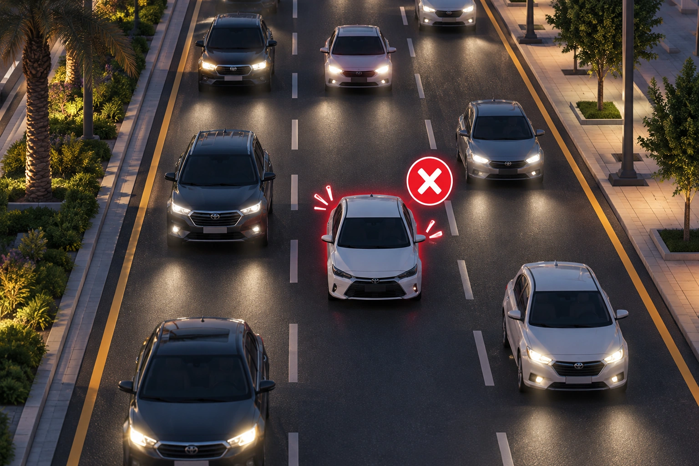
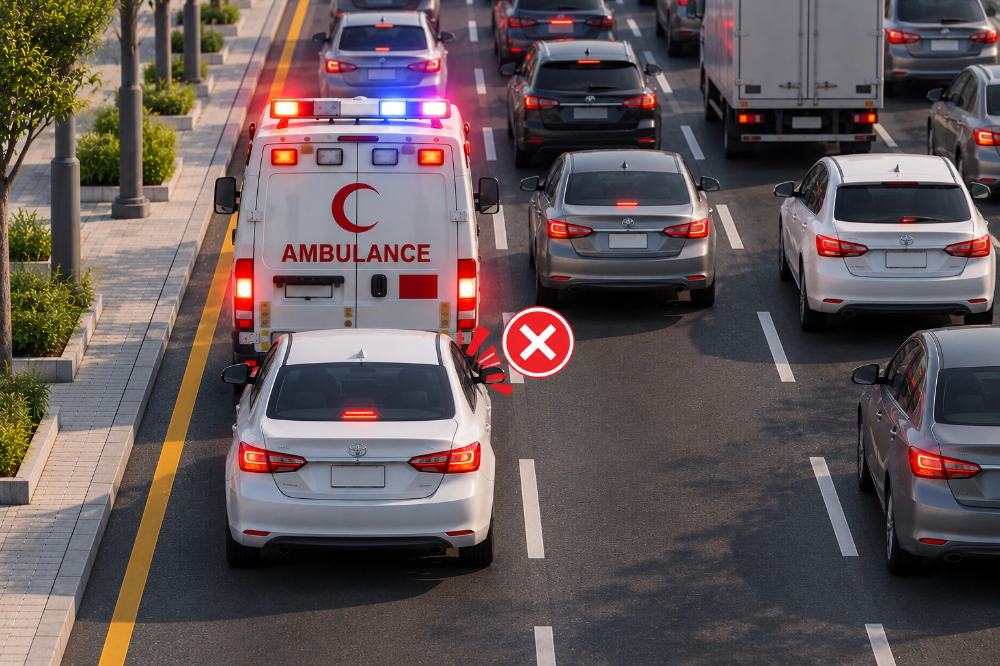
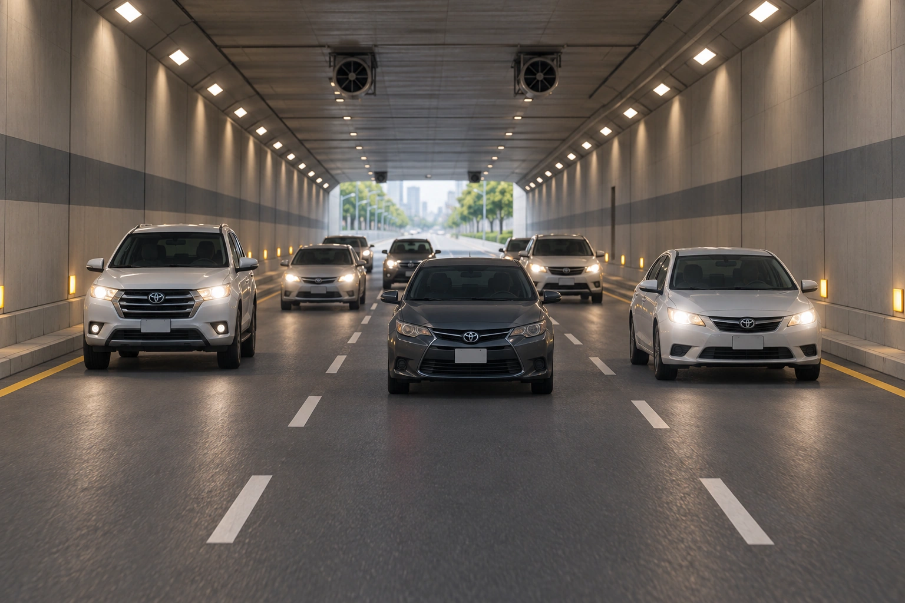
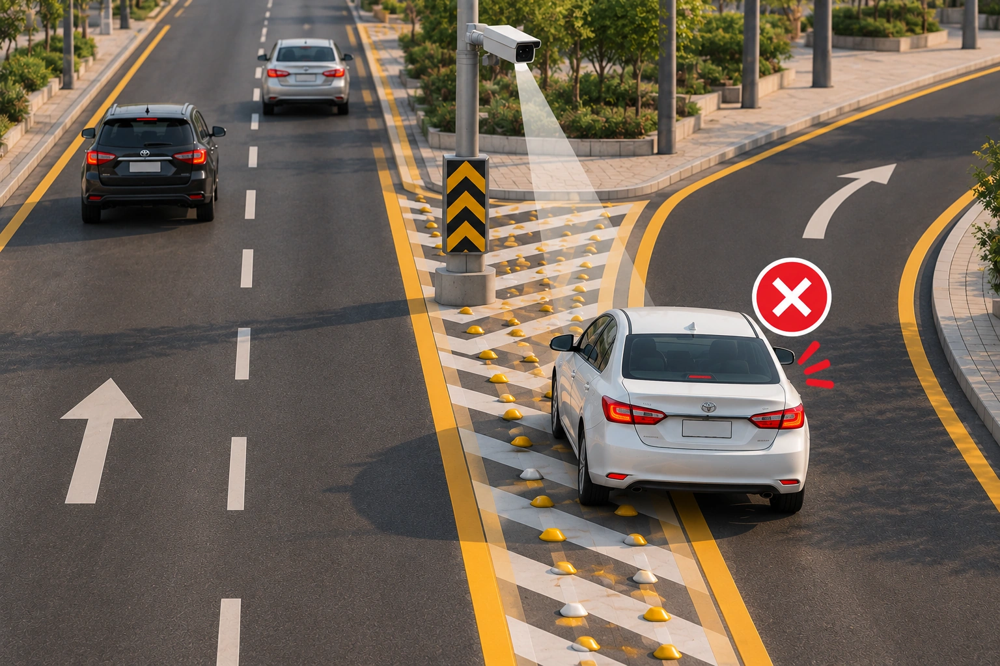
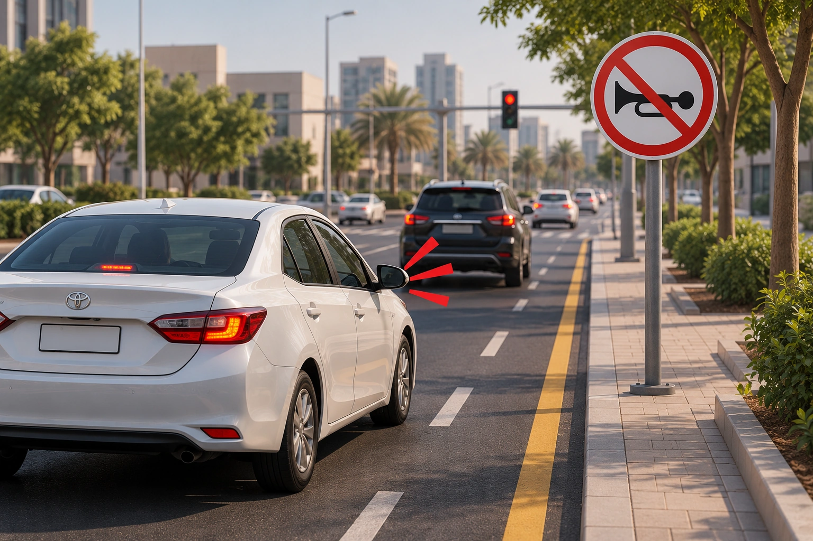

عدم ترك مسافة كافية
عدم ترك مسافة كافية بين المركبة والمركبة التي أمامها بما يسمح
بتفادي وقوع حادث عند التوقف أو التباطؤ المفاجئ.

عدم استخدام إشارات الالتفاف
عدم استخدام إشارة الالتفاف عند التحول إلى اليمين أو اليسار،
أو عند التجاوز أو تغيير المسار.

استخدام كتف الطريق
استخدام كتف الطريق لتجاوز أرتال المركبات أمام إشارات المرور
أو نقاط الضبط الأمني يُعد مخالفة مرورية.

مخالفات أنوار المركبة
مخالفة قواعد استعمال أنوار التلاقي، أو عدم استخدام الأنوار
اللازمة أثناء القيادة ليلًا أو عند ضعف الرؤية.

مخالفات مركبات الطوارئ
عدم إعطاء أفضلية المرور لسيارات المواكب الرسمية أو مركبات
الطوارئ يُعد مخالفة مرورية.

القيادة داخل الأنفاق
قيادة المركبة داخل الأنفاق دون إضاءة أنوارها تُعد مخالفة
مرورية.
استخدام الهاتف أثناء القيادة
استخدام الهاتف المحمول باليد أثناء قيادة المركبة يُعد
مخالفة مرورية.
الانشغال عن الطريق
الانشغال بغير الطريق أثناء قيادة المركبة يُعد مخالفة،
ويؤثر على قدرة السائق على متابعة الطريق والتعامل مع المواقف
المرورية.
حزام الأمان ومقاعد الأطفال
عدم ربط حزام الأمان أو عدم استخدام مقاعد الأمان المخصصة
للأطفال يُعد مخالفة مرورية.

القيادة في مسارات غير مخصصة
القيادة في مسارات غير مخصصة للمركبة تُعد مخالفة من مخالفات
تنظيم السير على الطرق.
التوقف في حالات الطوارئ
عدم اتخاذ الاحتياطات اللازمة عند إيقاف المركبة في حالات
الطوارئ على الطرق العامة يُعد مخالفة مرورية.

إساءة استخدام منبه المركبة
إساءة استعمال منبه المركبة تُعد مخالفة مرورية.